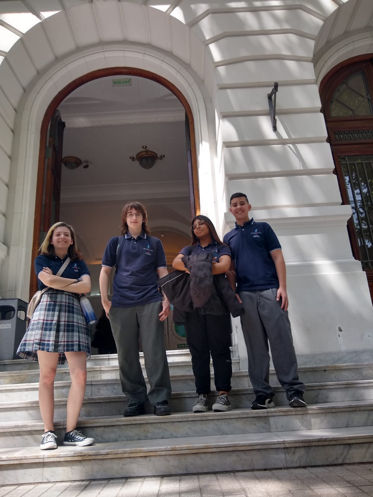

Certificaciones de conocimientos digitales en UTN
Por Máximo Bassi de 3°B
Desde hace algunos años los alumnos del CEAES participan del progrma de certificación Digital Junior de la UTN.
El progrma Digital Junior es un programa de integración de Competencias de Educación Digital desarrollado por la Universidad Tecnológica Nacional.
La certificación que se realizó en la UTN fue el pasado 28 de octubre en dicha universidad, donde los alumnos del colegio hicieron una evaluación en base a la aplicación aprendida en clase, cada curso rindió distintas aplicaciones
El día del examen nos acompañó la profesora Laura Rodriguez hasta la sede de la UTN.
5° rindió M.S EXCEL y Adobe Photoshop, los alumnos que rindieron Excel fueron:
Acosta Bortoni Eluney Antara
Alvarez Arceci Máximo
Cari Belizán Leila Agustina
Brandan Sofía Belen
Cid Castillo Valentina
Cueva Gutierrez Naomi Solagne
Villarreal Brisa Macarena
Lupiano Santiago Luis
Manrique Caterine
Pereira Agustin
Valenzuela Nicolás
Los alumnos que rindieron Adobe Photoshop fueron:
Cari Belizán Leila Agustina
Benitez Camila Ayelén
Romero Morales Serena
3° rindió Adobe Illustrator y M.S WORD, los alumnos que rindieron Adobe Illustrator fueron:
Bassi Maximo
Carrizo Solahaga Sofia
Fritzsche Marcos
El alumno que rindio M.S WORD fue:
Suarez Thiago Alessio
2° rindió M.S WORD, los alumnos que rindieron fueron:
Estevez Catalina
Lipezker Camila
Rodriguez Santiago
1° rindió M.S POWERPOINT, los alumnos que rindieron fueron
Frega Barreiro Vito Tomas
Medina Vita Ivo Exequiel
Soto Tiziano Nahuel
Vega Vanzan María Victoria
Personalmente la experiencia me gustó mucho ya que es algo que estudias todo el año y llegas al examen nervioso pero seguro de que estudiaste y estás preparado, y tener la nota y que aprobaste es una muy linda sensación y poder decir que lo aprobaste es la mejor recompensa.
Si para el año que viene tenés la posibilidad de ir, andá, la universidad es impresionante, como así también la experiencia.
